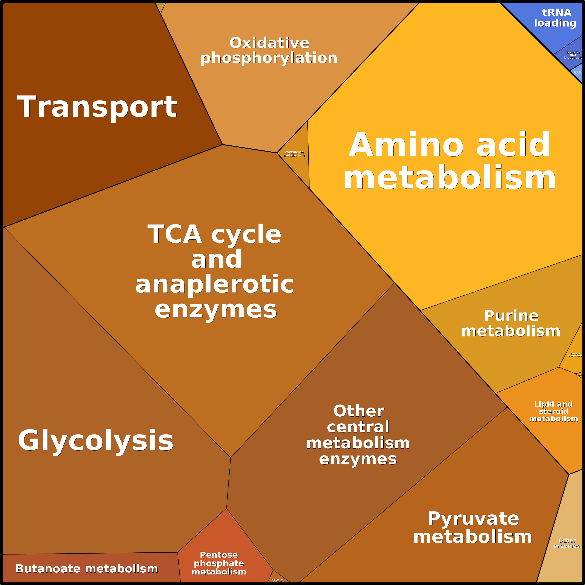

There are currently two available RBA models (of Bacillus subtilis and Escherichia coli), and they can be found on our github repository: Bacterial-RBA-models. To run them, or any other existing RBA model, open a console at the root of the RBApy repository, and run:
python solve_rba_model.py path/to/model where the path points to the directory containing the XML files defining the RBA model.
Results of RBApy simulations can be exported in formats supported for visualization of genome-scale flux data with Escher maps and protein data with Proteomaps. To export flux data in a format compatible with Escher maps (JSON), a line can be added to you simulation script:
results.write_fluxes('path_to_file',
file_type='json',
merge_isozyme_reactions=True,
only_nonzero=True,
remove_prefix=True)Click to see an example of fluxes visualized using Escher maps:
The generated file can then be uploaded to Escher maps via their menu Data -> Load reaction data. The function supports json and csv file types. If merge_isozyme_reactions option is set to True, all the reactions which are catalyzed by the same enzymatic function, but of different protein composition are summed up under the original reaction ID (check section 5.2). If the reactions IDs are preceeded by an "R_" prefix, but the visualization tool expects it to be absent, it can be removed by setting the option remove_prefix to True.
Proteome prediction can be visualized via Proteomaps. The file compatible with their input format can be generated by adding this line to your simulation script:
results.write_proteins('path_to_file', file_type='csv')Of course, Proteomaps will be able to visualize your data provided that your proteins are assigned KEGG IDs. In case other ID types are used, RBApy doesn't convert them to KEGG IDs. This has to be taken care of by the user.
Click to see an example of protein concentrations visualized using Proteomaps:
The medium composition is defined in the file medium.tsv. The file is located in the directory containing the XML files defining the RBA model. The first column contains the prefixes of metabolites that are detected in the external compartments in the SBML (see section 5.1). The second column corresponds to the concentration of metabolites in millimoles.
To change the medium composition:
--------------------------------
Original file
--------------------------------
Metabolite Concentration
M_k 10
M_no3 10
etc.
--------------------------------
New file
--------------------------------
Metabolite Concentration
M_k 10
M_no3 5
etc.
python solve_rba_model.py path/to/model Here RBApy evaluates the apparent catalytic rates of transporters using the new metabolite concentrations, before solving the optimization problem.
RBA model parameters are defined in the file parameters.xml. This file is located in the directory containing the XML files of the RBA model.
To update parameters Open the file parameters.xml Update the value of the parameter that you want to change. For instance:
--------------------------------
Original file:
the function ribosomeEfficiencyMM describing the efficiencies of ribosomes
max(Ymin, kmax*µ/(Km+µ))
--------------------------------
<function id="ribosomeEfficiencyMM" type="michaelisMenten">
<listOfParameters>
<parameter id="kmax" value="97200"/>
<parameter id="Km" value="0.5"/>
<parameter id="Y_MIN" value="32400"/>
</listOfParameters>
</function>
etc. Change the maximal rate of translation from 97200 aa/h to 48600 aa/h:
--------------------------------
New file:
the function ribosomeEfficiencyMM describing the efficiencies of ribosomes
max(Ymin, kmax*µ/(Km+µ))
--------------------------------
<function id="ribosomeEfficiencyMM" type="michaelisMenten">
<listOfParameters>
<parameter id="kmax" value="48600"/>
<parameter id="Km" value="0.5"/>
<parameter id="Y_MIN" value="32400"/>
</listOfParameters>
</function>>Run the model using:
python solve_rba_model.py path/to/model Here RBApy will automatically read the new values. For the units of all parameters, please refer to the paper Goelzer et al. 2015, or to the description of the XML format defining RBA models.
Be careful when you update some parameters! Some parameters such as the fraction of total proteins allocated to the different compartments must sum to 1. The fraction of non-enzymatic proteins within compartments should be lower than 1.
python generate_rba_model.py path/to/params.in python generate_rba_model.py path/to/params.in python generate_rba_model.py path/to/params.in python solve_rba_model.py path/to/modelDuring the first run of RBApy, the package will use by default the ribosome composition, the average chaperone composition and the tRNAs of Escherichia coli. To adapt the machineries to the organism of interest, simply substitute the proteins/rnas within the files while keeping strictly the format.
An example: the ribosome machinery. The ribosome is usually composed of 3rRNAs (5S, 15S, 23S), around 50 ribosomal proteins, and the initiation, elongation and release factors. The ribosome.fasta lists all the machinery composition in a pseudo-fasta format:
>rba|rrnO-16S|rrnO-16S|rna|1
TTTATCGGAGAGTTTGATCCTGGCTCAGGACGAACGCTGGCGGCGTGCCTAATACATGCA
AGTCGAGCGGACAGATGGGAGCTTGCTCCCTGATGTTAGCGGCGGACGGGTGAGTAACAC
GTGGGTAACCTGCCTGTAAGACTGGGATAACTCCGGGAAACCGGGGCTAATACCGGATGG
TTGTTTGAA …
>rba|rrnO-23S|rrnO-23S|rna|1
GGTTAAGTTAGAAAGGGCGCACGGTGGATGCCTTGGCACTAGGAGCCGATGAAGGACGGG
ACGAACACCGATATGCTTCGGGGAGCTGTAAGCAAGCTTTGATCCGGAGATTTCCGAATG
GGGAAACC …
>rba|rrnO-5S|rrnO-5S|rna|1
TTTGGTGGCGATAGCGAAGAGGTCACACCCGTTCCCATACCGAACACGGAAGTTAAGCTC
TTCAGCGCCGATGGTAGTCGGGGGTTTCCCCCTGTGAGAGTAGGACGCCGCC
>rba|P0AG67|RS1_ECOLI 30S ribosomal protein S1 OS=Escherichia coli (strain K12) GN=rpsA PE=1 SV=1|protein|1
MTESFAQLFEESLKEIETRPGSIVRGVVVAIDKDVVLVDAGLKSESAIPAEQFKNAQGEL
EIQVGDEVDVALDA…
…>rba | Molecule ID | Molecule Name | Molecule Type | Molecule Stoichiometry
--- Sequence ----
During the parsing of the fasta file, each time a protein is read, RBApy tries to extract automatically the location (see section 2.3.2.4), cofactors (see 2.3.2.5) of the protein. In case of ambiguities, the protein is also inserted in the corresponding files locations.tsv, and cofactors.tsv. If the protein is not present in the uniprot file, the protein is still inserted in proteins.xml using the amino-acid sequence of the fasta file, and in processes.xml. By default, the protein will be located in the cytoplasm, without cofactors. Moreover, the unknown protein is also inserted in the file unknown_proteins.tsv (see 2.3.2.7).
An advice: For the ID of proteins, we recommend to use either the Uniprot protein ID (e.g. P21464), either the absolute identifier of the gene name (e.g. BSU16490), but not the gene name in 4 letters (e.g. rpsB). Indeed, the field gene name in Uniprot contains the current gene name of the protein, but also all synonyms. Sometimes, some genes may have been renamed, which can result in multiple entries for the 4-letters gene name.
To update the RBA model, re-run the model generation bypython generate_rba_model.py path/to/params.inThe file metabolites.tsv is critical for RBApy. First It identifies metabolic precursors that are consumed/produced by the cellular processes to build biomass component. Second, the file is also used to link these metabolic biobricks to SBML ids of metabolites from the metabolic network.
In metabolites.tsv, the user declare:The file metabolites.tsv, is organized in 4 columns, entitled ID, NAME, SBML ID and CONCENTRATION.
python generate_rba_model.py path/to/params.inNow look at the files
The file macrocomponents.tsv describes the metabolic requirements to build macro-components such as the cell wall or the cytoplasmic membrane. Usually, the intracellular concentration of such macro-components is growth-rate independent. The file describes which metabolite is required for macro-component synthesis, and the value of this concentration.
The file is organized in two columns, TARGET_METABOLITE and TARGET_FLUX.
To update the RBA model, re-run the model generation by
python generate_rba_model.py path/to/params.inThe file location_map.tsv is used to link uniprot location ids with user-defined compartment ids. For every uniprot location, user may fill in a name compartment (e.g. SBML compartment names). The idea behind this file is that it can be used to fuse compartments or ignore them. If the field is left empty (or [MISSING]), a compartment named after uniprot location is created.
An example:| UNIPROT NAME | USER ID |
| Cell outer membrane | Cell_outer_membrane |
| Cell inner membrane | Cell_inner_membrane |
| Cytoplasm | Cytoplasm |
| Cell membrane | Cell_inner_membrane |
| Periplasm | Periplasm |
| Membrane | Cell_inner_membrane |
| Secreted | Secreted |
In this example, proteins that have the location "Cell membrane" and "Membrane" have the same location in the RBA model: "Cell_inner_membrane"
To update the RBA model, re-run the model generation by
python generate_rba_model.py path/to/params.in <RBAMetabolism>
<listOfCompartments>
<compartment id="Cell_inner_membrane"/>
<compartment id="Cytoplasm"/>
<compartment id="Cell_outer_membrane"/>
<compartment id="Periplasm"/>
<compartment id="Secreted"/>
</listOfCompartments>
RBApy parses automatically the field SUBCELLULAR LOCATION [CC] of the Uniprot file to determine the location of a protein. Proteins for which uniprot has no location data are listed in the file locations.tsv . The file locations.tsv contains 4 columns, named
Here is the example of the protein P39400 (Uniprot ID) for which the field SUBCELLULAR LOCATION [CC] of the Uniprot file was missing.
| ENTRY | GENE NAME | PROTEIN NAME | LOCATION |
| P39400 | lgoD yjjN b4358 JW5793 | L-galactonate-5-dehydrogenase (EC 1.1.1.-) | Periplasm |
To update the RBA model, re-run the model generation by
python generate_rba_model.py path/to/params.inNow look at the file proteins.xml that contains the localisation and composition in amino-acids and cofactors of proteins. The attribute "compartment" is updated with the new localisation of the protein.
<macromolecule id="b4358" compartment="Periplasm">
<composition>
<componentReference component="A" stoichiometry="39"/>
<componentReference component="C" stoichiometry="8"/>
<componentReference component="E" stoichiometry="20"/>
<componentReference component="D" stoichiometry="16"/>
<componentReference component="G" stoichiometry="32"/>
<componentReference component="F" stoichiometry="13"/>
<componentReference component="I" stoichiometry="26"/>
<componentReference component="H" stoichiometry="9"/>
<componentReference component="K" stoichiometry="16"/>
<componentReference component="M" stoichiometry="8"/>
<componentReference component="L" stoichiometry="24"/>
<componentReference component="N" stoichiometry="14"/>
<componentReference component="Q" stoichiometry="17"/>
<componentReference component="P" stoichiometry="19"/>
<componentReference component="S" stoichiometry="13"/>
<componentReference component="R" stoichiometry="15"/>
<componentReference component="T" stoichiometry="16"/>
<componentReference component="W" stoichiometry="2"/>
<componentReference component="V" stoichiometry="28"/>
<componentReference component="Y" stoichiometry="5"/>
<componentReference component="CHEBI:29105" stoichiometry="2"/>
</composition>
</macromolecule>RBApy parses automatically the field COFACTOR of the Uniprot file to determine the cofactors of a protein. However, the field COFACTOR is often written in natural language, which can lead to difficulties during the parsing. Therefore, for every protein having ambiguities, the file cofactors.tsv lists name, chebi identifier and stoichiometry of cofactors per protein. If one protein has several cofactors, several lines corresponding to the protein are present in cofactors.tsv. Based on the last column (containing uniprot cofactor annotation), user should check inferred values and fill in fields tagged as [MISSING]. Important: if annotation says that there is no cofactor, do not remove line from csv file. Ignore name and chebi fields and set stoichiometry to 0.
The file cofactors.tsv contains 5 columns:
Here is the example of the protein P0ACC7 (Uniprot ID) for which the field COFACTOR cannot be automatically parsed. The following entries are automatically inserted in the file cofactor.tsv. The user must indicate which cofactor the protein will use:
| ENTRY | CHEBI | NAME | STOICHIOMETRY | UNIPROT ANNOTATION |
| P0ACC7 | CHEBI:18420 | Mg(2+) | 1 | Binds 1 Mg(2+) ion per subunit (PubMed:17473010). Can also use Co(2+) ion to a lesser extent (PubMed:11329257). {ECO:0000269|PubMed:11329257, ECO:0000269|PubMed:17473010}; |
| P0ACC7 | CHEBI:48828 | Co(2+) | 0 | Binds 1 Mg(2+) ion per subunit (PubMed:17473010). Can also use Co(2+) ion to a lesser extent (PubMed:11329257). {ECO:0000269|PubMed:11329257, ECO:0000269|PubMed:17473010}; |
To update the RBA model, re-run the generation by
python generate_rba_model.py path/to/params.inNow look at the file proteins.xml that contains the localisation and composition in amino-acids and cofactors of proteins. The cofactor and its stoichiometry are added (In the example, the protein entry "P0ACC7" corresponds to the gene name "b3730"):
<macromolecule id="b3730" compartment="Cytoplasm">
<composition>
<componentReference component="A" stoichiometry="45"/>
<componentReference component="C" stoichiometry="4"/>
<componentReference component="E" stoichiometry="26"/>
<componentReference component="D" stoichiometry="29"/>
<componentReference component="G" stoichiometry="49"/>
<componentReference component="F" stoichiometry="7"/>
<componentReference component="I" stoichiometry="30"/>
<componentReference component="H" stoichiometry="12"/>
<componentReference component="K" stoichiometry="25"/>
<componentReference component="M" stoichiometry="9"/>
<componentReference component="L" stoichiometry="45"/>
<componentReference component="CHEBI:18420" stoichiometry="1.0"/>
<componentReference component="N" stoichiometry="24"/>
<componentReference component="Q" stoichiometry="20"/>
<componentReference component="P" stoichiometry="13"/>
<componentReference component="S" stoichiometry="11"/>
<componentReference component="R" stoichiometry="24"/>
<componentReference component="T" stoichiometry="30"/>
<componentReference component="W" stoichiometry="3"/>
<componentReference component="V" stoichiometry="39"/>
<componentReference component="Y" stoichiometry="11"/>
</composition>
</macromolecule>RBApy parses automatically the field SUBUNIT STRUCTURE [CC] of the Uniprot file to determine the stoichiometry of a protein within its enzymatic complex. For every ambiguous and empty entry, gene name and protein name are provided for proper identification in the file subunits.tsv. By default, the stoichiometry of the protein is set to 1. User should read annotation field (or any other sources of information) and update the stoichiometry if necessary.
Subunits.tsv contains 5 columns, named
Here is the example of the protein P68699 (Uniprot ID) for which the field SUBUNIT STRUCTURE [CC] of the Uniprot file cannot be parsed automatically. The protein P68699 is the ATP synthase subunit c, which is present in 10 copies per complex. The user must indicate the stoichiometry of P68699 (the default value is 1):
| ENTRY | STOICHIOMETRY | GENE NAMES | PROTEIN NAMES | UNIPROT NOTE |
| P68699 | 10 | atpE papH uncE b3737 JW3715 | ATP synthase subunit c (ATP synthase F(0) sector subunit c) (Dicyclohexylcarbodiimide-binding protein) (F-type ATPase subunit c) (F-ATPase subunit c) (Lipid-binding protein) | SUBUNIT: F-type ATPases have 2 components, F(1) - the catalytic core - and F(0) - the membrane proton channel. F(1) has five subunits: alpha(3), beta(3), gamma(1), delta(1), epsilon(1). F(0) has three main subunits: a(1), b(2) and c(10). The alpha and beta chains form an alternating ring which encloses part of the gamma chain. F(1) is attached to F(0) by a central stalk formed by the gamma and epsilon chains, while a peripheral stalk is formed by the delta and b chains. {ECO:0000269|PubMed:11320246}. |
To update the RBA model, re-run the model generation by
python generate_rba_model.py path/to/params.inNow look at the file enzymes.xml that contains the composition of enzymatic complexes. The stoichiometry of the ATP synthase complex (identifier "R_ATPS4rpp_enzyme") is updated:
<enzyme id="R_ATPS4rpp_enzyme" reaction="R_ATPS4rpp" forward_efficiency="R_ATPS4rpp_efficiency" backward_efficiency="default_transporter_efficiency" zeroCost="false">
<machineryComposition>
<listOfReactants>
<speciesReference species="b3734" stoichiometry="3.0"/>
<speciesReference species="b3732" stoichiometry="3.0"/>
<speciesReference species="b3731" stoichiometry="1.0"/>
<speciesReference species="b3733" stoichiometry="1.0"/>
<speciesReference species="b3735" stoichiometry="1.0"/>
<speciesReference species="b3737" stoichiometry="10.0"/>
<speciesReference species="b3736" stoichiometry="2.0"/>
<speciesReference species="b3738" stoichiometry="1.0"/>
<speciesReference species="b3739" stoichiometry="0.1"/>
</listOfReactants>
</machineryComposition>
</enzyme>The file unknown_proteins.tsv contains the gene names for which the automatic matching between the SBML IDs and either the user-defined protein IDs in the fasta files, either the Uniprot gene name failed. By default, RBApy associates a default cytoplasmic protein of mean composition, named "average_protein_Cytoplasm". However, the user can choose to associate another average protein, or another gene name, as soon as the gene name ID is present in the Uniprot file.
The file unknown_proteins.tsv contains two columns:
To update the RBA model, re-run the model generation by
python generate_rba_model.py path/to/params.in
An existing RBA model can be calibrated using the RBApy.estim package, which containts a number of scripts. prot_per_compartment.py is a script allowing one to estimate the percentage of protein allocated to each compartment of the organism. nonenz_per_compartment.py uses the functional annotations of proteins, such as COG, to estimate the portion of protein in each compartment which is non-enzymatic. Nonenzymatic proteins can be considered those that do not perform a function within the model (they are not assigned either to metabolic enzymes or to other molecular machines). kapp.py allows for the estimation of apparent catalytic rates of enzymes from fluxomics and proteomics experiments performed in sufficiently similar conditions.
All the calibration scripts make use of configuration files, in a format that is expected from the Python's standard configuration parser.
Examples of these files are available at the RBApy github repository.
All the files that are passed to the calibration scripts need to be either in csv or in some type of Excel format. This is specified via the file_type value, which can take on csv or excel values.
For example, in specifying the file with experiment details, in the case we are providing it in csv format, the configuration would look as follows:
[Experiment]
file = /path/to/file
file_type = csv
delimiter = ;
...If you would want to provide the data in excel format, the configuration would look something like this:
[Experiment]
file = /path/to/file
file_type = excel
delimiter = ;
sheet_name = Sheet1
skiprows = 3
...
In order to estimate the protein percentage per compartment, the user needs to have at her disposal a proteomics experiments for cells at different growth rates, and proteins need to have subcellular location annotation. All this information is given to the script via the configuration file prot_per_compartment.cfg.
The configuration script has five fields:
[Experiment]: a csv/excel file which lists the IDs of experiments in one column, and associated growth rates in the other.
The expriment IDs need to match ones in the proteomics files. The experiment IDs are expected to be in the first column, and you need to provide the name of the column containing growth rates in the configuration file, under the name growth_rate_column.[ProteinData]: a csv/excel file containing measured protein abundances. All experiments are expected to be in the same file (in case of csv) or on the same sheet (in the case of an excel file). If the location data is present in the same sheet, you can additionally provide the parameter location column. If not, you can separately fill out the configuration for the subcellular location information.[LocationData]: a csv/excel file containing protein IDs in the first column and subcellular locations in one of the other columns. User needs to provide the column name in location_column parameter.[CompartmentMap]: a csv/excel file you can use to map multiple compartments onto one. For example, in E. coli, there are comartments called "Outer membrane" and "Cell outer membrane", which can logically be mapped onto one single compartment. This file is for such a purpose. First column should contain the original compartments, and one other column needs to contain the new compartments. The name of this column needs to be supplied in the cm_column parameter.[Output]: the results of the fitting with be outputted to this file. It requires you to give path to a file, a file type and file type - specific parameters.0.7 - 0.1 μ, and the minimum and maximum growth rate available for experimental data were 0.2 and 2 [1/h], this information should be inputted into the parameters.xml file of RBA in the following way:
<function id="fraction_protein_Cytosol" type="linear" variable="growth_rate">
<listOfParameters>
<parameter id="Y_MIN" value="-inf"/>
<parameter id="LINEAR_CONSTANT" value="0.7"/>
<parameter id="Y_MAX" value="inf"/>
<parameter id="LINEAR_COEF" value="-0.1"/>
<parameter id="X_MIN" value="0.2"/>
<parameter id="X_MAX" value="2"/>
</listOfParameters>
</function>
In RBA, the modelled proteins are involved in metabolic function or are part of a modelled cellular process (translation, chaperoning - this will depend on your particular model). However, not the entire protein pool will be reserved for such proteins - there are other, unmodelled, proteins which the cell also needs to
produce (the so-called maintenance or housekeeping proteins). The script nonenz_per_compartment.py and the accompanying configuration file nonenz_per_compartment.cfg enable the estimation of the portion of these proteins for all cellular compartments. Most of the configuration is identical as for the fraction of protein per compartment (see section 3.2).
Two additional files that need to be provided are:
[CategoryData]: Proteins with assigned functional categories. First column is expected to contain protein IDs, and one of the other columns the functional categories. The name of this column needs to be provided in the cat_column parameter.[IsEnzymaticData]: a file describing which functional category is considered enzymatic (opposite of housekeeping). First column should contain a full list of functional categories, and one other column should contain TRUE or FALSE values. The name of that column should be provided in the is_enzymatic_column parameter.In order to estimate the apparent catalytic rates of enzymes, you need to provide fluxomics and proteomics data. Proteins need to have same identifiers as the ones used in the model. The configuration script has four fields:
[ProteinData] where you need to provide the path to the file containing the proteomics data, as well as the cell dry weight for the cell at that growth conditions. This is assuming that the proteomics data is given in copies per cell. If the data is already provided as a concentration, you can set the cell dry weight (cdw) parameter to 1.
ub_column and lb_column.
[Model][Output]Normally, RBApy should be compatible with any SBML models (SBML level 2 and 3) that have been generated using the protocol of Thiele & Palsson. "A protocol for generating a high-quality genome-scale metabolic reconstruction." Nature protocols 5.1 (2010): 93.". However, in practice, ambiguous information may be present, which can disturb or slow down the process of RBA model building.
In RBA, one reaction is always catalyzed by an unique enzymatic complex. Therefore, isoenzymes, i.e. reactions that are catalyzed by several distinct enzymatic complexes, are duplicated. For instance, if one reaction R is catalyzed by two different enzymes, E1 and E2, then we introduce two reactions R1 and R2, catalyzed respectively by E1 and E2. The two enzymes have their own apparent catalytic rates kapp1 and kapp2.
During the parsing of the SBML file, RBApy parses the boolean rule of gene(s) associated to the reaction and duplicates the reaction automatically if necessary. RBApy can parse gene-association reactions that are annotated either in the field “note”, either using the fbc plugin with SBML level 3. However, sometimes, the boolean rule can be very complex, and thus difficult to parse. Therefore, RBApy assumes that the boolean relation is always “or”s of “and”s. Moreover, the words “or” and “and” must be written in lowercase letters.
Empty fields in Gene-association will be interpreted as a Ediffusion reaction, meaning that no enzyme will be associated to the reaction. In contrast, any other character string will automatically be considered as a gene name. RBApy will try to match the gene name with a Uniprot entry. If the matching fails, then a default protein of average composition is created. The unknown gene name will be inserted in the file unknown_protein.tsv for manual curation (see section 2.3.2.7). Therefore, a reaction without a gene association may be catalyzed by an enzyme, then the user should insert any character strings such as “-” or “unknown”.
RBApy determines external metabolites from the SBML file using the following rules:
boundaryCondition attribute is set to true.M -> or -> M),
the compartment is considered external: all the metabolites it contains are tagged as external.
For greater reliability, we advise to set either EXTERNAL_COMPARTMENTS in params.in or boundary conditions in the SBML.
In the RBA model, medium.tsv contains the concentrations of all external metabolites. These concentrations are used to define input fluxes through transporter enzymes. By default, they modulate transporter catalytic rates through Michaelis-Menten functions: the higher the concentration, the higher the import efficiency.
In genome scale metabolic reconstructions, it is customary to give "R_" prefixes to reaction IDs, and "M_" prefixes to metabolites. Cobrapy toolbox removes these prefixes, and they are also absent, for example, from the Escher maps flux visualization tool. RBApy retains these prefixes. Because of that, in some result export functions, it is possible to remove this prefix to make the data compatible with visualization tools. Apart from flux variables, RBApy also estimates enzyme abundances. Assuming that the reaction ID is R_reaction, a corresponding enzyme ID will be R_reaction_enzyme. Apart from reactions and enzymes, RBApy estimates concentrations of cell process macromolecular machines, such as ribosomes, chaperones, etc. These processes are defined in the processes.xml file, and their IDs are usually preceeded by "P_" prefix.
As described in section 4.1, more than one protein complex can be assigned to an enzymatic function. In such cases, RBA will create as many reactions as there are protein complexes associated with it, and each flux and protein complex will be a variable in the optimization procedure. For example, if in the metabolism file we find a reaction with an ID Reac1 which is catalyzed by three different protein complexes, RBA will create three flux variables with IDs Reac1, Reac1_2 and Reac1_3 and three enzyme variables, each one associated to a specific protein complex, with IDs Reac1_enzyme, Reac1_2_enzyme and Reac1_3_enzyme.